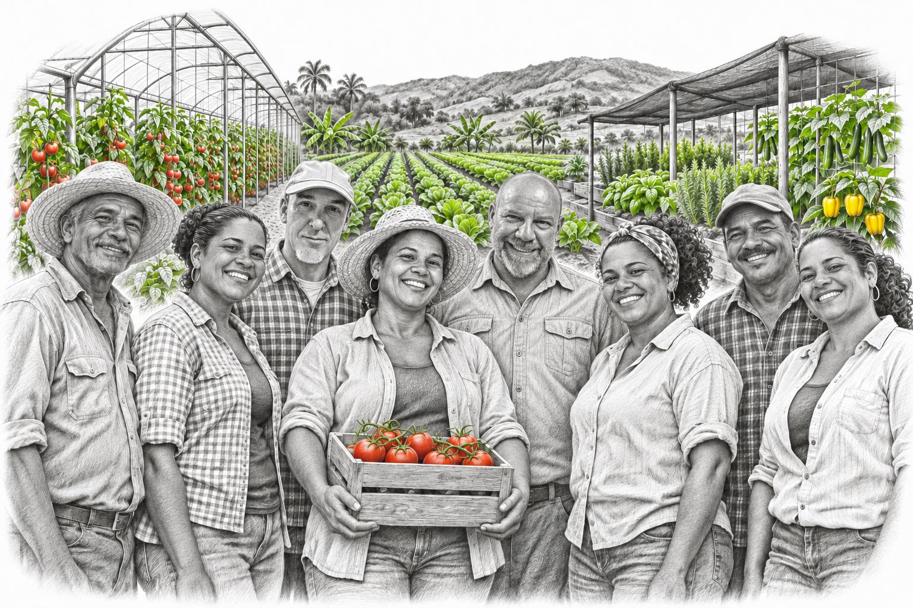
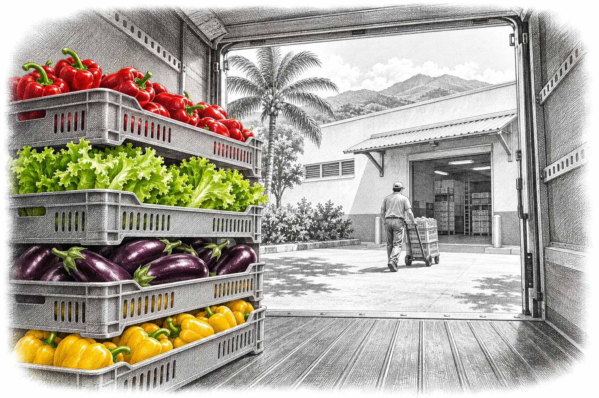

Nosotros
Trabajamos con productores que cultivan en la República Dominicana y con supermercados que buscan frutas, vegetales y hierbas para sus clientes.

Del campo a tu supermercado
Conocemos desde hace años a los productores con los que trabajamos. Complementamos sus cosechas con importaciones cuando la oferta local no alcanza.
Conoce nuestros productos
Palapa Verde
Chutney, pesto, hummus y salsa con vegetales protagonistas.
Palapa Verde es nuestra marca de alimentos preparados: chutney, pesto, hummus y salsa. Go Veggie Life es su principal proveedor de ingredientes. Los productos están en desarrollo y todavía no están a la venta.
Visitar Palapa Verde